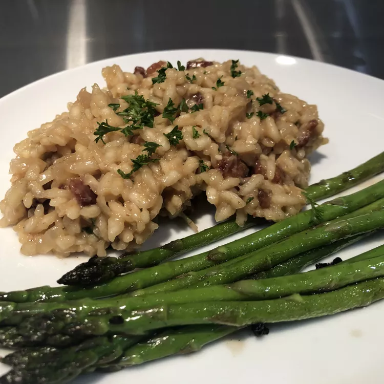

Bacon Rissoto Recipe

Description
Creamy risotto with crisp bacon. Plate the risotto and add one raw egg
yolk to each serving if desired, allowing the diner to break the yolk and stir into the rice.
Ingredients
- 8 oucers bacon, diced
- 5 cups chicken stock
- 4 tablespoons unsalted buteer, divided
- 1/2 onion, diced
- 4 cloves garlic, minced
- 1 1/2 cups Arborio rice
- 1/4 cup grated Parmesan cheese
- salt and ground black pepper
Steps
- Cook and stir bacon in a large skillet over medium heat, turning occasionally,
until browned, about 10 minutes. Drain on paper towels; reserve.
- Bring chicken stock to a boil in a saucepan over high heat. Reduce heat to low; keep warm.
- Melt 2 tablespoons butter in a large, heavy-bottomed saucepan
over medium-high heat. Add onion and garlic; cook and stir
until onion turns golden brown at edges, about 2 minutes.
Stir in rice until coated in butter and rice begins to toast,
2 to 3 minutes. Reduce heat to medium; stir in 1/3 chicken
stock and continue stirring until rice absorbed liquid and
turned creamy. Repeat process twice more, stirring constantly.
Stirring in broth should take 15 to 20 minutes in all.
When finished, the rice should be tender, yet slightly firm.
- Remove risotto from heat; stir in remaining 2 tablespoons butter, Parmesan cheese, and bacon.
Season with salt and black pepper before serving.
- Bake the lasagna